Sumith
Abeykoon
I recreate the conditions of planetary interiors in the laboratory to study what they are made of, how silicates, metals, sulphur and fluids behave and move within them, and how magma rises to feed volcanoes.
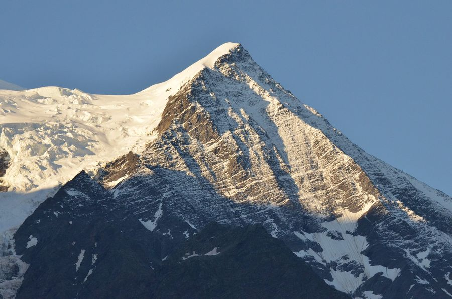
First light on the Mont Blanc massif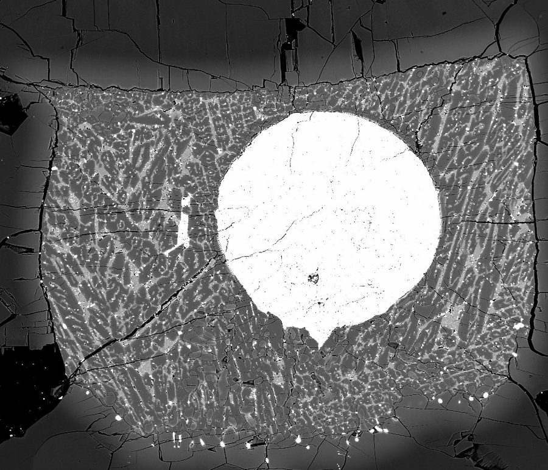
A planet, 1 mm acrossFrom the core to the crater, and into the materials lab
Metal, sulphur and the fluids that move things
What the Earth's interior is made of, and how sulphur, oxygen and hydrogen are distributed between metal, melt and fluid at the pressures of the mantle and core.
Read more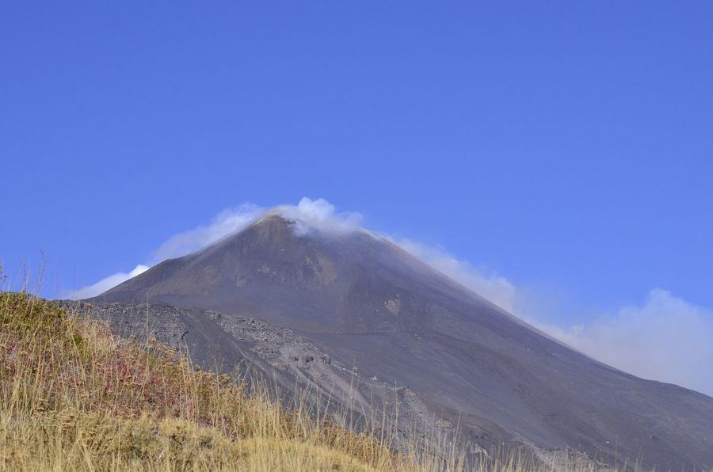
How melts flow, crystallise and erupt
Viscosity and structure of volcanic melts, the kinetics of crystallisation, and what they decide about whether an eruption is quiet or explosive — Etna, Campi Flegrei, Colli Albani.
Read more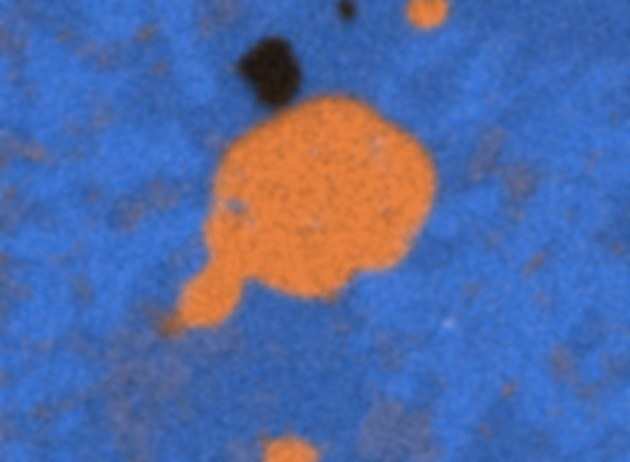
Where carbonatite magmas come from
Crystallising a common nephelinite step by step until a carbonate liquid separates from it — the experimental route to the strangest magma on Earth, from my years at CRPG in Nancy.
Read more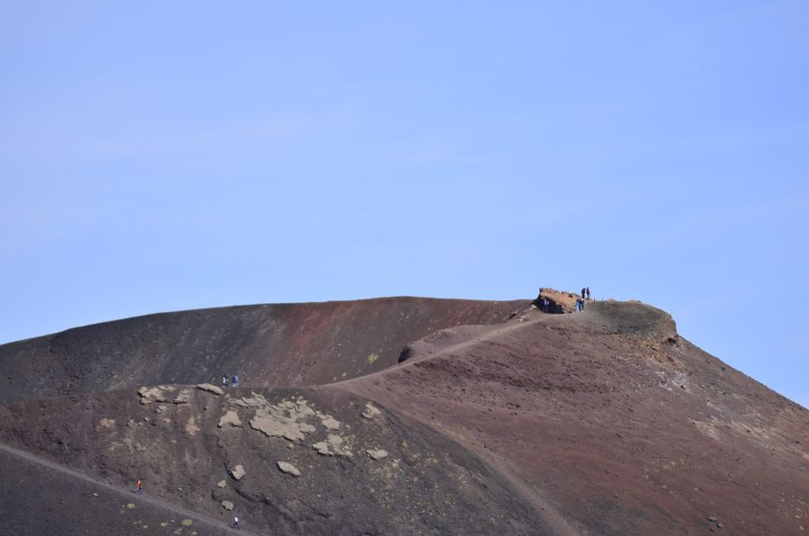
Volcanic ash into ceramics
Turning the by-product of eruptions into useful materials, with the glass and ceramics groups at CNR-ISSMC in Faenza and the University of Trento — part of the CERAMICVOLC project.
Read moreLatest from the laboratory
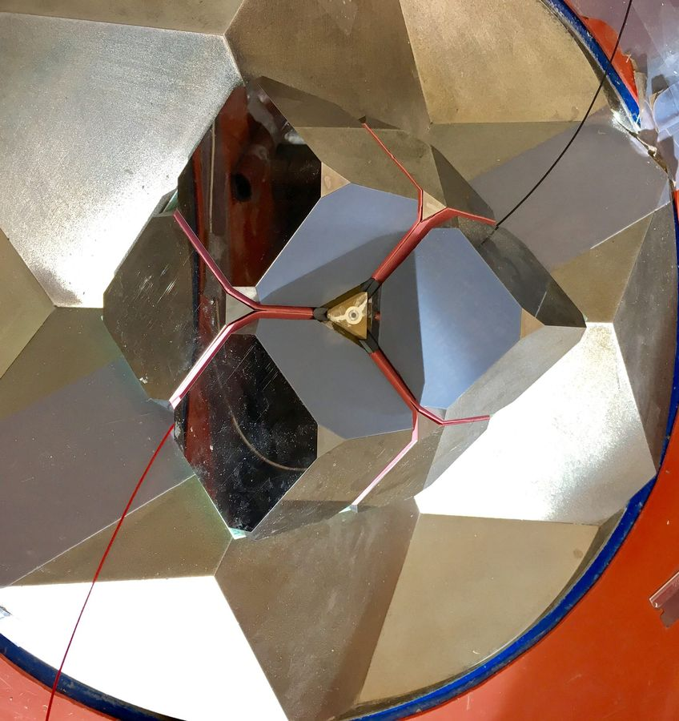
Multi-anvil press assembly — eight tungsten carbide cubes close on a sample the size of a grain of riceCook and look
We cannot drill more than fifteen kilometres into the Earth, so we make the deep Earth in the laboratory instead. A press squeezes a tiny sample from all sides while a heater takes it to magmatic temperatures; then we take it out and look at it with every instrument we can get our hands on — electron probe, Raman, calorimetry, neutron and X-ray diffraction, tomography. At a synchrotron, we sometimes watch it while it is still cooking.
Half of the job is physics. The other half is a workshop: building the assemblies, commissioning the presses, and writing the software that runs them.
Mostly outdoors: on the tennis court, on the bike, or up a mountain with a long lens
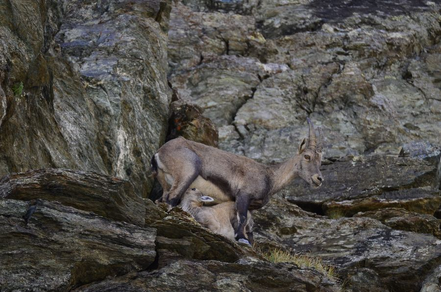
A mother's love, on a ledge above Monte Rosa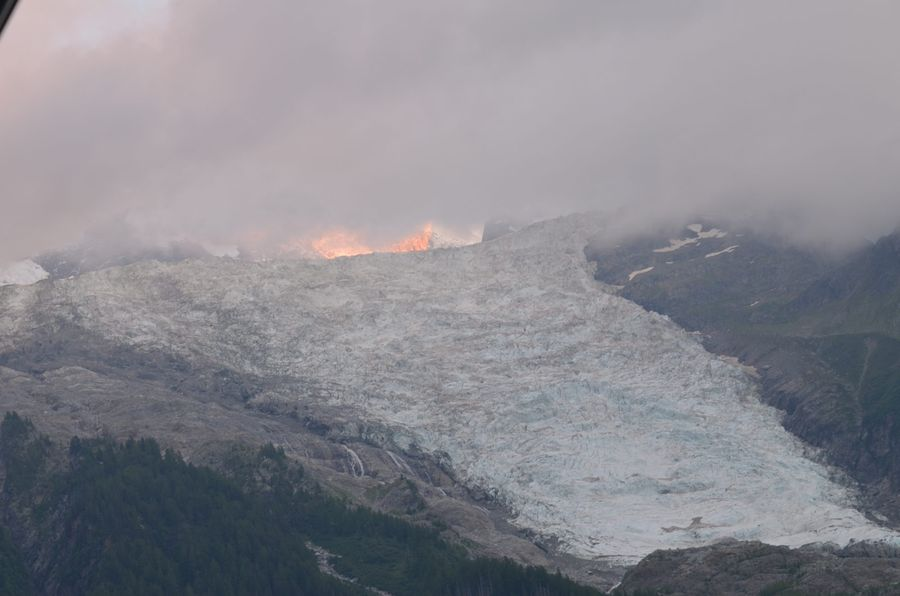
Alpenglow on the Bossons glacier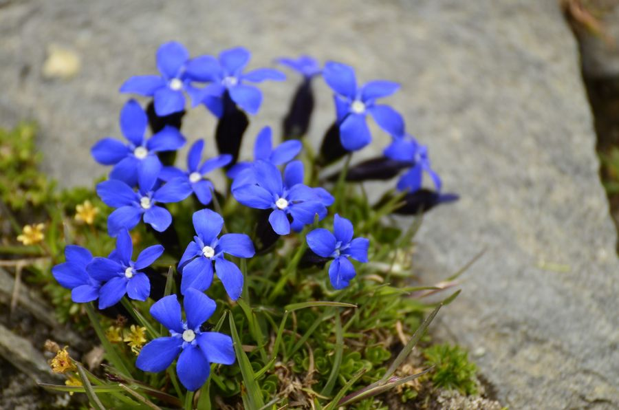
Spring gentian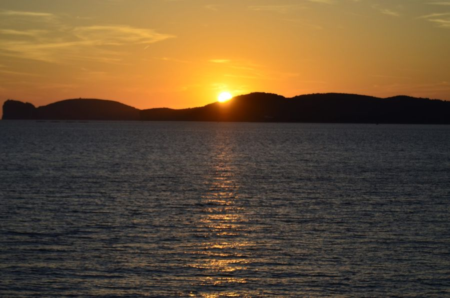
Sunset behind the headland, Sardinia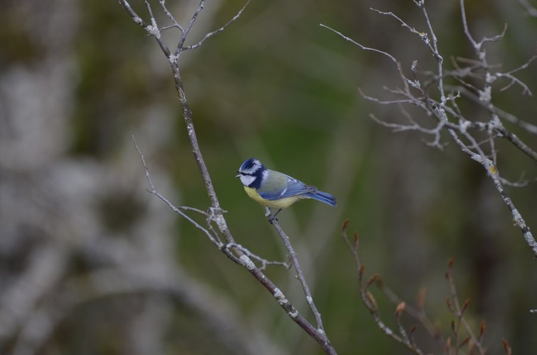
Blue tit, Nancy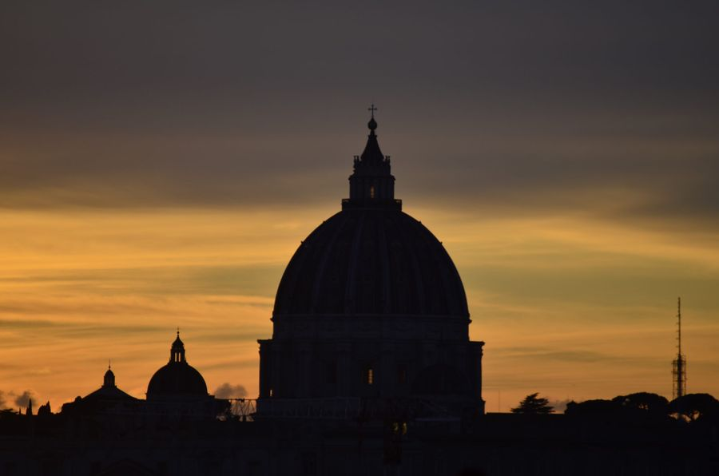
St Peter's at dusk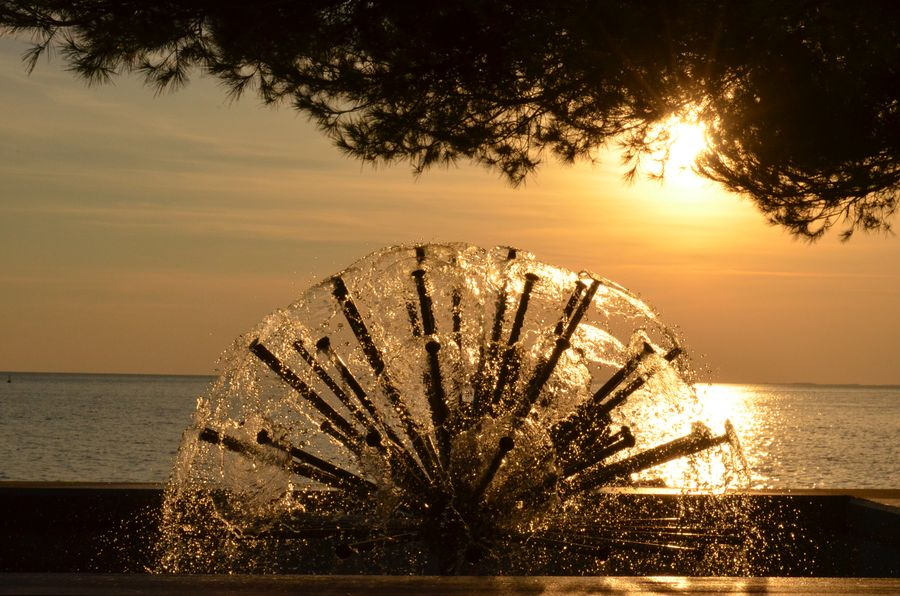
Sun through the fountain, Trieste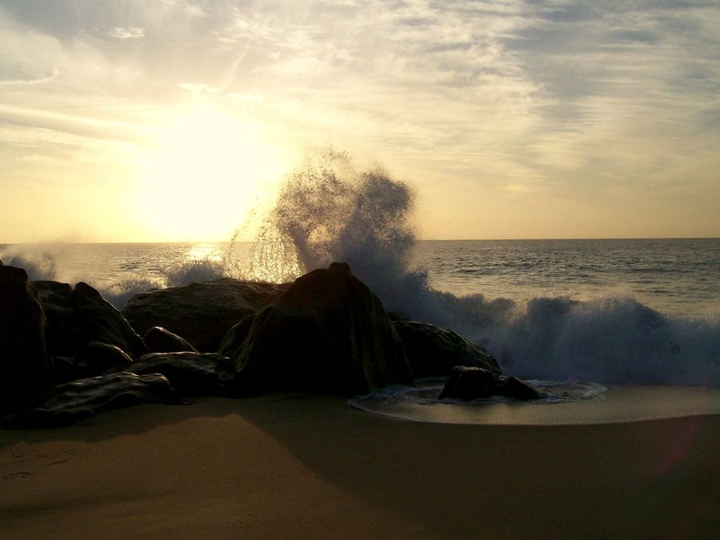
Sunrise on the east coast of Sri Lanka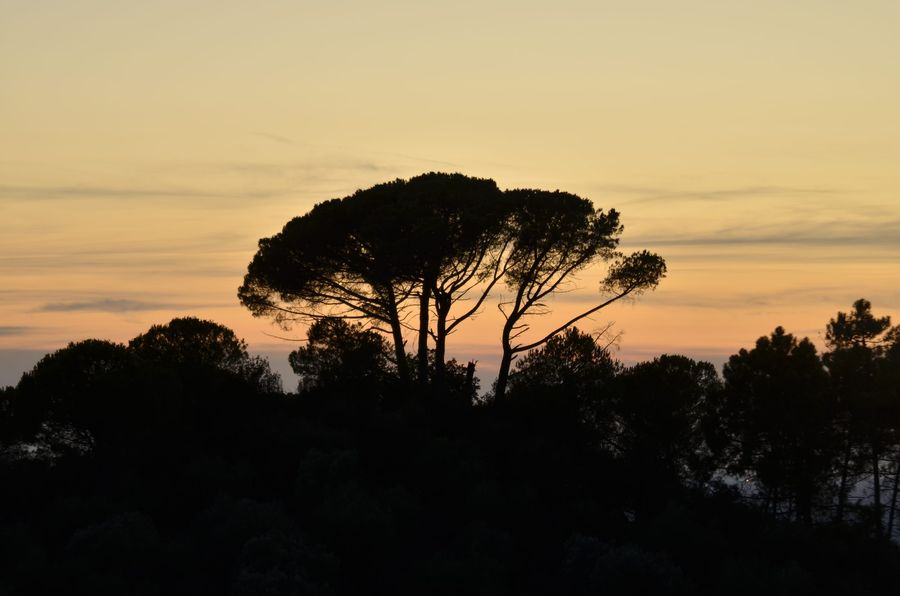
A stone pine at sunset, TuscanyPhotography
Mountains, wildlife, a comet. A tele lens pointed at whatever I find beautiful, and got right in the camera rather than afterwards. Every photograph here is the original frame — no post-processing. Organised by the story behind each set, not by greatest hits.
See the photographsLife, and how I think about it
Grew up in the hill country of Sri Lanka; lived in Germany, Japan, France and now Italy. Cooking, cycling at sunrise, tennis, classical music — and a quieter practice of paying attention that matters to me more than any of it.
The rest of the picture“ Science is only a training. The mission in life is to become a good person.
Students, collaborators, and the curious
I co-supervise master's and PhD students and I am open to collaboration — on high-pressure experiments, melt rheology, volcanic materials, glass and ceramics, metals and alloys, or a sample you have and no way to measure. If you read something here and want to talk about it, write.